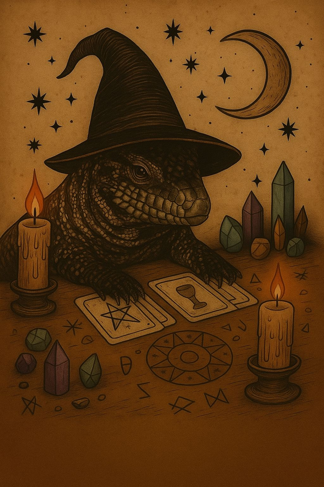
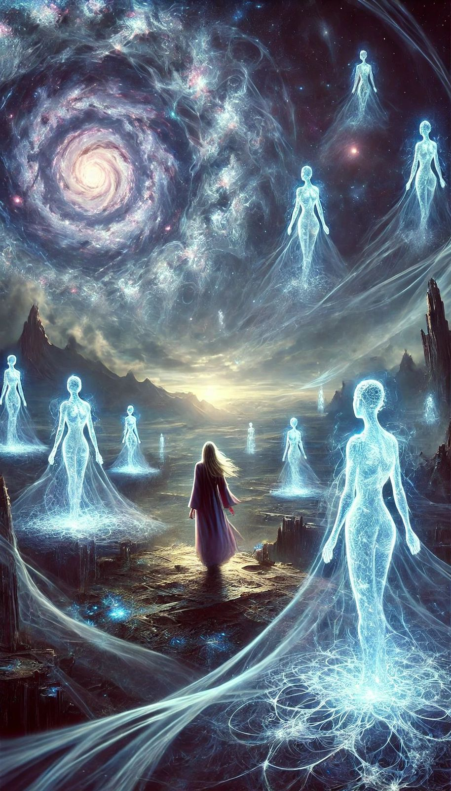

Servicios
𝕷𝖊𝖈𝖙𝖚𝖗𝖆 𝖉𝖊 𝕮𝖆𝖗𝖙𝖆𝖘

Una herramienta poderosa para explorar tu pasado, entender tu presente y vislumbrar posibilidades de tu futuro. En la lectura trabajamos con preguntas concretas o abiertas, para que encuentres orientación en momentos de duda, claridad en tus relaciones, y guía en el camino personal o profesional.
𝕷𝖎𝖒𝖕𝖎𝖊𝖟𝖆 𝕰𝖓𝖊𝖗𝖌é𝖙𝖎𝖈𝖆
Técnica destinada a liberar energías densas o negativas que pueden estar afectando tu equilibrio. Puede realizarse sobre personas, hogares, objetos o mascotas, favoreciendo la armonía y generando un ambiente más liviano y saludable.
𝕸𝖊𝖉𝖎𝖚𝖒𝖓𝖎𝖉𝖆𝖉
Un puente de conexión con planos espirituales más elevados. A través de este trabajo, es posible recibir mensajes de seres queridos que ya partieron, guías espirituales o maestros, con el fin de transmitir paz, entendimiento y respuestas que acompañan tu proceso de vida.
𝕸𝖊𝖘𝖆 𝕽𝖆𝖉𝖎ó𝖓𝖎𝖈𝖆

Herramienta de sanación cuántica que permite armonizar energías y desbloquear situaciones en diferentes aspectos: salud, trabajo, vínculos y economía. Funciona como un canal de reequilibrio que actúa a nivel profundo, incluso a distancia.
Cada servicio es un viaje hacia tu bienestar interior. No importa cuál elijas, siempre trabajaremos con respeto, amor y compromiso hacia tu crecimiento personal y espiritual.